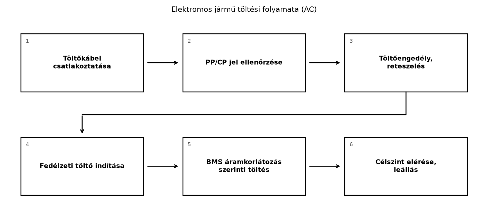
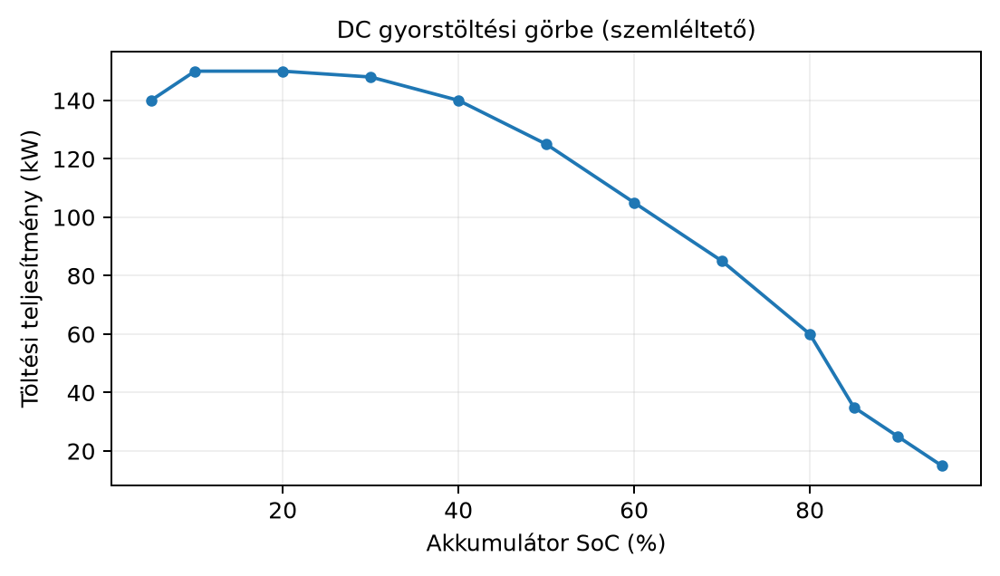

Egy villanyautó-tulajdonos azzal jön a műhelybe, hogy az autó otthon „egész éjjel töltött”, mégsem lett meg a várt hatótáv, a fali csatlakozó pedig melegedett. Egy másik ügyfél a gyorstöltő oszlopnál azt tapasztalja, hogy a kijelző szerint 150 kW-os töltő 20 perc alatt alig töltött 40%-ot, pedig a táblázat szerint gyorsabbnak kellett volna lennie. Szerelőként ilyenkor nem elég annyit mondani, hogy „az elektromos autó ilyen”: ismerni kell a töltési módokat, a csatlakozók jeleit, a fedélzeti töltő és a BMS szerepét, valamint a töltési idő valósághű számítását. Ez az alfejezet ezt az ismeretet építi fel a gyakorlati diagnosztikához.
Képzelj el egy láncot az elektromos hálózattól az akkumulátorig. Az AC-töltésnél az energia útja:

Az áramút: hálózati csatlakozó → töltőkábel (Mode 2/3) → a jármű fedélzeti töltője (on-board charger, OBC) → nagyfeszültségű egyenáramú (DC) csatlakozás az akkumulátorra. DC-gyorstöltésnél a fedélzeti töltő kimarad: a töltőoszlop külső AC/DC-átalakítója közvetlenül a HV-akkumulátorra dolgozik. A töltési teljesítményt mindkét esetben a jármű akkumulátor-felügyeleti rendszere (BMS) és a töltőoldali szabályzás közösen határozza meg.
Definíció. A töltési mód (charging mode) az elektromos járművek töltésére szolgáló villamos kapcsolódási és védelmi elrendezések osztályozása az IEC 61851 szabványsorozat szerint (ellenőrizendő: a szabvány aktuális kiadása). A gyakorlatban négy módot különböztetünk meg: Mode 1, Mode 2, Mode 3, Mode 4.
Definíció. A fedélzeti töltő (on-board charger, OBC) a járműbe épített váltakozó/egyenáramú (AC/DC) átalakító, amely a hálózati váltakozó feszültségből az akkumulátor számára megfelelő egyenfeszültséget és töltőáramot állít elő. A fedélzeti töltő teljesítménye korlátozza az AC-töltés sebességét; tipikus egyfázisú 3,7 kW, háromfázisú 11 kW vagy 22 kW (ellenőrizendő: gyártói adat).
Definíció. A DC-gyorstöltés (DC fast charging) olyan töltési mód, amelyben a töltőoszlop saját, nagy teljesítményű AC/DC-átalakítóval rendelkezik, és a jármű fedélzeti töltőjét megkerülve közvetlenül a HV-akkumulátorra kapcsolódik. Ezt Mode 4-nek nevezik.
Összefüggés. A töltési idő első közelítésben:
ahol: - a töltési idő (h), - a betárolandó energia (kWh), - a töltő vagy a fedélzeti töltő névleges teljesítménye (kW), - a töltő és a vezeték veszteségeit együttesen figyelembe vevő hatásfok (jellemzően 0,85–0,95, ellenőrizendő).
Megjegyzés. A AC-töltésnél a fedélzeti töltő teljesítménye, DC-töltésnél a töltőoszlop teljesítménye, de a valós töltési görbe miatt ez utóbbi nem állandó.
Az alábbi táblázat a négy töltési mód jellemzőit foglalja össze példaértékekkel.
| Mód | Csatlakozó/töltő | Áram, feszültség | Védelem | Jellemző teljesítmény | Megjegyzés |
|---|---|---|---|---|---|
| Mode 1 | Háztartási aljzat (Schuko) | max. 10–16 A, 230 V AC | csak a lakáshálózat védelme | 2,3–3,6 kW | elektromos járműhöz EU-ban általában nem ajánlott |
| Mode 2 | Háztartási aljzat + kábelbe épített IC-CPD | 10–16 A (ritkán 32 A), 230 V AC | IC-CPD | 2,3–7,2 kW | otthoni, hordozható megoldás |
| Mode 3 | Dedikált töltőállomás/wallbox, Type 2 csatlakozó | 16–63 A, 1 vagy 3 fázis | töltőbe épített | 3,6–22 kW AC | EU szabványos AC-töltés |
| Mode 4 | DC-gyorstöltő, CCS Combo 2 / CHAdeMO | 100–500 A DC | töltőbe épített, külső AC/DC | 50–350 kW DC | fedélzeti töltő nélkül, közvetlen DC |
Az értékek tanulási példák (ellenőrizendő: IEC 61851, járműgyártói adat).
A Mode 1 a járművet háztartási aljzatból közvetlenül, külön töltésszabályzó nélkül tölti. Ez azért problémás, mert a lakáshálózati védelem nem érzékeli a jármű földelési hibáját, és a tartós nagy áram melegítheti az aljzatot. Modern elektromos autók ezt a módot gyakran elutasítják.
A Mode 2 gyakorlatilag egy hordozható töltőkábel, amelybe egy kis elektronika, az úgynevezett IC-CPD (in-cable control and protection device) van beépítve. Az IC-CPD figyeli a földelést, a hőmérsékletet, és megszakítja a töltést, ha hibát észlel. Magyarországon gyakori otthoni töltési mód.
A Mode 3 a dedikált töltőállomás vagy fali töltő (wallbox) használata. Itt a kommunikáció és a védelem a töltőben, illetve a járműben van. A csatlakozó Európában leggyakrabban Type 2 (IEC 62196-2), amely egy- és háromfázisú AC-töltést is támogat.
A Mode 4 a DC-gyorstöltő. A csatlakozó Európában a CCS Combo 2, amely a Type 2 felső részét egészíti ki két nagy egyenáramú lábbal. Japánban és régebbi járműveken a CHAdeMO található. A CCS a jármű és a töltő közötti digitális kommunikációra PLC-t (power line communication) használ, míg a CHAdeMO hagyományos CAN-alapú jelet (ellenőrizendő).
Az ábrán látszik, hogy a CP és a PP a két kis jelérintkező a Type 2 (és a CCS2) felső részén; a gyakorlati útmutató méréseit ezeken és a PE-n kell végezni. Az érintkezők pontos kiosztását a mérés előtt a gyártói rajzon és az IEC 62196-2/-3 szerint ellenőrizni kell. Az interaktív változatban rámutatásra az érintkező neve és szerepe jelenik meg.
Az AC-töltésnél a jármű és a töltő közötti összeköttetést két jel biztosítja:
A CP-jel felső szintjét a jármű ellenállásai húzzák le: a dióda után az R2 (kb. 2,74 kΩ) már csatlakoztatáskor +9 V-ra, az S2 kapcsolóval bekötött R3 (kb. 1,3 kΩ) töltéskérésnél +6 V-ra. A kitöltési tényezőből 10–85 % között adja a megengedett áramot (pl. 26,7 % → 16 A); névlegesen 5 % kitöltés digitális kommunikációt jelent (ellenőrizendő: IEC 61851-1). Az interaktív kalkulátorban a kitöltés és az állapot (A, B, C, E) állítható, és a program kiírja a feszültségszinteket és az engedélyezett áramot.
Csatlakoztatáskor a jármű a CP-vezeték és a védővezető közé egy ellenállást kapcsol, ettől a CP-jel pozitív csúcsa +12 V-ról kb. +9 V-ra esik (B állapot: jármű csatlakoztatva); amikor a jármű tölteni kész, egy további ellenállást kapcsol be, a csúcs kb. +6 V-ra esik (C állapot: töltés), és ekkor kapcsolja be a töltő a hálózati feszültséget. A CP–PE rövidzár vagy a hiányzó negatív félhullám hibaállapot, ilyenkor a töltő nem kapcsol be (ellenőrizendő: IEC 61851-1). A töltő a jelszintet érzékeli, majd a BMS a CP jel alapján korlátozza a fedélzeti töltő áramfelvételét. DC-töltésnél a jármű a BMS által kért áramot és feszültséget digitálisan küldi a töltőoszlopnak, és a töltő ezt szabályozza.
Előírás. Az Európai Unióban az alternatív üzemanyagok infrastruktúrájáról szóló (EU) 2023/1804 rendelet (AFIR; a korábbi 2014/94/EU irányelv helyébe lépett) a nyilvános töltőpontokra AC-töltésnél a Type 2, DC-töltésnél a CCS2 (Combo 2) csatlakozót írja elő (ellenőrizendő: hatályos szöveg). A töltési módokat az IEC 61851 szabvány rendezi; a jármű elektromos biztonságát az ECE R100 előírás (ellenőrizendő: aktuális változat) követeli meg. A lakossági villamos hálózatra és a wallbox-szerelésre a hazai villamos biztonsági szabványok (MSZ HD 60364 sorozat) és az áramszolgáltatói előírások vonatkoznak.
A töltési teljesítmény nem állandó. AC-töltésnél a fedélzeti töltő teljesítménye közel állandó, amíg a BMS nem korlátozza az akkumulátor magas töltöttségi szintjénél. DC-gyorstöltésnél a töltési görbe határozottan csökken: az akkumulátor hidegen vagy magas hőmérsékleten nem fogad el nagy áramot, és ahogy a feszültsége nő, a BMS a cellavédelem miatt visszaveszi az áramot.

A görbe jól mutatja, hogy a 150 kW-os töltő csak alacsony töltöttségnél, ideális hőmérsékleten adja le a névleges teljesítményt: kb. 10–40% között a teljesítmény közel állandó (plató), utána fokozatosan csökken. A 80% fölött a lassulás drasztikus: 85%-nál már csak kb. 35 kW, 95%-nál kb. 15 kW.
Adott: egy elektromos jármű akkumulátorának hasznos kapacitása 60 kWh, a fedélzeti töltője háromfázisú 11 kW, a töltési hatásfokot 0,90-nak vesszük. Az ügyfél 20% SoC-ról 80% SoC-ra szeretne tölteni.
Az energiaigény:
A töltési idő:
Ellenőrzés: 3,6 h ≈ 3 óra 36 perc, ami reális egy 11 kW-os otthoni töltőnél.
Ugyanez a jármű egy 150 kW-os CCS-töltőn tölt 10% SoC-ról 70% SoC-ra. Az energiaigény:
A névleges 150 kW nem állandó; a töltési görbéből (a SoC szerinti időátlaggal) az átlagos teljesítmény ebben a tartományban körülbelül 125 kW (ellenőrizendő: járműmodelltől függő). A töltési idő:
Hibás számítás ellenpélda. Ha valaki a 150 kW-os csúcsteljesítménnyel számol lineárisan: . Ez alábecsüli a valós időt, mert a görbe ellaposodik, és a hatásfok sem 100%.
Egyfázisú, 230 V-os aljzatból a Mode 2 töltőkábel 12 A-t vesz fel. A hálózati felvett teljesítmény:
A járműhöz a fedélzeti töltő hatásfokával (0,90) jut:
Ha 10 kWh betárolandó energia szükséges, az idő:
Ez jól mutatja, miért fontos a dedikált áramkör és a wallbox: a 2,48 kW-os töltés egy 8 órás éjszaka alatt kb. 20 kWh-t tárol be (8 h · 2,48 kW), ami egy 60 kWh-s akkumulátornak csak kb. harmada.
Figyelem. A töltés során a jármű és a töltő együtt alkot villamos rendszert. A sérült, megtört vagy házilag javított töltőkábel, a nem megfelelő hosszabbító és a túlterhelt háztartási aljzat tüzet okozhat. A töltőkábel csatlakozója töltés közben reteszelve van; a jármű csak a kommunikáció megszakadása és a feszültségmentesítés után oldja a reteszt (ellenőrizendő: gyártói leírás).
Tilos. Háztartási elosztóból, sorba kötött hosszabbítókból, vagy a megengedettnél nagyobb beállított árammal töltött járművet felügyelet nélkül hagyni. A töltőberendezés hálózati oldalát, a wallboxot, a DC-töltőoszlopot csak megfelelő villamos képzettséggel rendelkező személy szerelheti, vizsgálhatja és javíthatja.
Szabály. A Mode 2 töltőkábel használata előtt ellenőrizni kell: - a hálózati aljzat és az azt védő kismegszakító terhelhetőségét (lakossági aljzaton jellemzően 10–16 A; tartós terhelésre a gyártói adat szerint), - a földelés meglétét, - a kábel és a csatlakozók sérülésmentességét, - a töltőkábel beállított áramkorlátját, amely ne haladja meg az aljzat és a kábel terhelhetőségét.
HV-biztonság. A jármű fedélzeti töltője a nagyfeszültségű (HV) rendszer része. A töltőberendezés csatlakoztatása előtt a jármű oldalán lévő töltőcsatlakozó nem HV-veszélyes, mert a feszültség csak a CP/PP kézfogás és a reteszelés után jelenik meg. A fedélzeti töltő és az akkumulátor közötti DC-körön, valamint a DC-gyorstöltő csatlakozóján azonban már nagyfeszültség van; ezt csak kiképzett személy, feszültségmentesítés után, gyártói utasítás szerint vizsgálhatja.
Környezetvédelem. A töltés során a jármű nem bocsát ki helyi szennyező anyagot, de a villamos energia előállítása környezeti terheléssel jár. A töltőberendezés elektromos hulladék, a jármű HV-akkumulátora pedig veszélyes hulladéknak minősülhet; az elhasznált töltőkábeleket és elektronikát szelektíven, az akkumulátort a gyártói vagy hatósági előírás szerint kell gyűjteni (ellenőrizendő: hulladékgazdálkodási jogszabály).
Eset – „Lassan tölt, és leold a kismegszakító.” Budapest környéki ügyfél elektromos autóját egy régi családi ház garázsában tölti Mode 2 kábellel. Reggelre nem éri el a 80%-ot, és néha a 16 A-es kismegszakító leold.
A szervizben átnézzük a járművet: a fedélzeti töltő és a BMS hibát nem jelez. A töltőkábel IC-CPD-jén a beállított áram 16 A, de a hálózati aljzat közelében lévő hosszabbító és a régi szerelés melegedik. A mérés szerint a feszültség a töltés alatt 215 V-ra esik, a felvett áram 15,8 A, ami a hosszabbítón 90°C feletti kötéshőmérsékletet okoz (ellenőrizendő: hőmérséklet-mérés).
Ok: a háztartási aljzat és a hosszabbító nem alkalmas folyamatos 16 A-es terhelésre, és a kábel ellenállása feszültségesést okoz.
Javítás: a jármű oldali beállítás módosítása nem elég; az ügyfélnek dedikált, legalább 2,5 mm²-es vezetéken, 16 A-es B karakterisztikájú kismegszakítóval és áram-védőkapcsolóval (a töltőpont szabványa szerinti típus, ellenőrizendő: MSZ HD 60364-7-722) védett áramkört és 3,6 kW-os wallboxot telepítünk. A töltési idő így megbízhatóan 4–6 óra lesz, a melegedés megszűnik.
Tanulság: a „lassú töltés” gyakran nem a jármű hibája, hanem a töltőoldali infrastruktúráé. A diagnosztikát a jármű oldalán kell kezdeni, de a hálózati oldal mérését csak jogosult villanyszerelő végezheti.
Cél: annak megállapítása, hogy a jármű töltőcsatlakozója, a CP/PP kommunikáció és a fedélzeti töltő teljesítménye megfelelő-e, ha a töltés nem indul vagy lassú.
Jármű- és adatazonosítás: jármű típusa, VIN-száma, akkumulátor-kapacitás, fedélzeti töltő névleges teljesítménye (gyártói adat – ellenőrizendő).
Szerszámok és mérőeszközök: diagnosztikai rendszerteszter (töltőmodul adatokkal), multiméter, lakatfogó, hőmérő/hőkamera, töltőkábel-tesztadapter, szigetelésvizsgáló (ha a gyártó előírja).
Biztonsági korlát. A feladat tanműhelyi környezetre, oktató felügyeletére és a gyártói javítási utasítás betartására vonatkozik; a megadott értékek tanulási példák. A HV-rendszeren csak arra kiképzett, jogosult személy dolgozhat. A hálózati aljzat és a wallbox vizsgálata villanyszerelői jogosultságot igényel.
Tipikus hibák. Hibás CP-jel (a töltő nem ad engedélyt), a PP-ellenállás szakadása miatt a jármű nem ismeri fel a kábelt, a fedélzeti töltő belső reléje nem húz be, a hűtőventilátor nem megy, a hűtőfolyadék szintje alacsony.
Dokumentálás: munkalapon rögzítjük a mért feszültségeket, áramokat, hőmérsékleteket, a hibakódokat és az elvégzett javítást.
Lineárisan számol DC-töltési időt. A tanuló a 150 kW-os csúcsteljesítménnyel osztja az energiát, és elfelejti, hogy a töltési görbe csökken. Helyes: az átlagos teljesítménnyel és a tényleges SoC-ablakkal számolni.
Nem veszi figyelembe a veszteséget. A fedélzeti töltő, a jármű belső vezetéke és az akkumulátor is disszipál. A hálózatból felvett energia 5–15%-kal több lehet a betárolt energiánál. A számításban -t használni kell.
Hosszabbítóval, túlterhelt aljzatról tölt. A hosszabbító ellenállása feszültségesést és melegedést okoz. A Mode 2 töltőkábel csak jó állapotú, megfelelő terhelhetőségű, földelt aljzatból üzemeltethető; hosszabbító használata tilos.
A CP/PP jelet figyelmen kívül hagyja a diagnosztikában. Ha a töltés nem indul, a hibakeresést a CP és PP jelek mérésével kell kezdeni, mert ezek jelzik, hol szakad meg a kommunikáció.
A „nagyobb töltő = gyorsabb töltés” tévhit. AC-töltésnél a fedélzeti töltő teljesítménye a korlát; egy 11 kW-os fedélzeti töltővel szerelt autó egy 22 kW-os wallboxról sem tölt 11 kW-nál gyorsabban.
1. feladat (A) Sorold fel a négy töltési módot, és mondd meg, melyiknél van fedélzeti töltő, és melyiknél nincs.
2. feladat (A) Egy 62 kWh-s elektromos autó fedélzeti töltője 11 kW, hatásfoka 0,91. Mennyi idő alatt tölt 15%-ról 90%-ra?
3. feladat (B) Egy háromfázisú wallbox 400 V-on, fázisonként 16 A-t ad le. Számítsd ki a leadott teljesítményt (), és a töltési időt, ha 50 kWh hasznos energiát kell betárolni és a fedélzeti töltő hatásfoka 0,92.
4. feladat (B) Az alábbi CP kitöltési tényező–áram párokat kaptad: 10% → 6 A, 20% → 12 A, 40% → 24 A. Rajzold fel a jelleggörbét kvalitatívan, és magyarázd el, mi történik, ha a kitöltési tényező 0%.
5. feladat (C) Egy jármű DC-töltése során 10% SoC-ról 80% SoC-ra 28 kWh energiát töltött. A töltőoszlop kijelzője szerint a felvett hálózati energia 31 kWh volt. Számítsd ki a töltési hatásfokot. Miért kisebb, mint 100%?
6. feladat (D) Ügyfél panasza: a töltés nem indul, a wallbox kijelzője „Waiting for vehicle” üzenetet mutat. Sorold fel, milyen járműoldali jeleket mérnél a hibakereséshez, és milyen eredmény utalna a fedélzeti töltő hibájára.
1. feladat (A) Mode 1: háztartási aljzat, fedélzeti töltő használatban. Mode 2: hordozható kábel IC-CPD-vel, fedélzeti töltő. Mode 3: wallbox, fedélzeti töltő. Mode 4: DC-gyorstöltő, a fedélzeti töltőt megkerüli.
2. feladat (A) ; .
3. feladat (B) A háromfázisú hatásos teljesítmény: . Töltési idő: .
4. feladat (B) A jelleggörbe lineáris, 0,6 A/% meredekségű: az áram a kitöltési tényezővel arányos (10–85 % között). 0%-nál a CP jel nem él, a töltő nem ad engedélyt, a jármű nem tölt.
5. feladat (C) A töltési hatásfok: . A veszteség a töltőoszlop AC/DC-átalakítója, a kábel, az akkumulátor belső ellenállása és az akkumulátorhűtés miatt keletkezik (DC-töltésnél a fedélzeti töltő kimarad).
6. feladat (D) Mérni kell a CP jelet (van-e 1 kHz, mekkora a kitöltési tényező), a PP jelet (a kábel csatlakoztatva van-e), a fedélzeti töltő bemeneti AC-áramát, a BMS töltésengedélyét. Ha a CP-csúcs +12 V marad, a töltő nem érzékeli a járművet (CP-vezeték, dióda vagy a jármű töltésvezérlője hibás). Ha a CP és PP jel rendben van, de a fedélzeti töltő nem vesz fel áramot, és a BMS engedélyt ad, akkor a fedélzeti töltő elektronikája vagy bemeneti reléje hibás.
A töltés AC- és DC-úton történhet. AC-töltésnél a hálózati váltakozó feszültséget a jármű fedélzeti töltője alakítja egyenárammá; a teljesítményt a fedélzeti töltő és a BMS korlátozza. A töltési módokat az IEC 61851 szerint Mode 1–4-nek nevezzük: a Mode 2 hordozható kábelt, a Mode 3 dedikált wallboxot, a Mode 4 DC-gyorstöltőt jelent. Európában az AC-töltés Type 2, a DC-töltés CCS Combo 2 csatlakozót használ (ellenőrizendő). A töltő és a jármű kommunikációja CP- és PP-jelekkel, illetve DC-töltésnél digitális protokollon keresztül történik. A töltési idő az energiaigény és a hasznos töltési teljesítmény hányadosa, figyelembe véve a hatásfokot. A DC-töltési görbe nem lineáris: a teljesítmény a SoC növekedésével csökken. A töltés biztonsága a sérült kábel, a hosszabbító és a túlterhelt aljzat elkerülésén, valamint a földelés és a védőberendezések meglétén alapul.
Továbbvitt eredmény. A töltési idő és a töltési módok számítását, a csatlakozók és a CP/PP jelek felismerését a vizsgafelkészülés komplex hibakeresési feladataiban és a gyakorlati vizsgán használjuk; a hatósági és ügyfélkommunikációban is ezzel érvelünk a töltési idő és a „miért lassú a töltés” kérdés esetén.